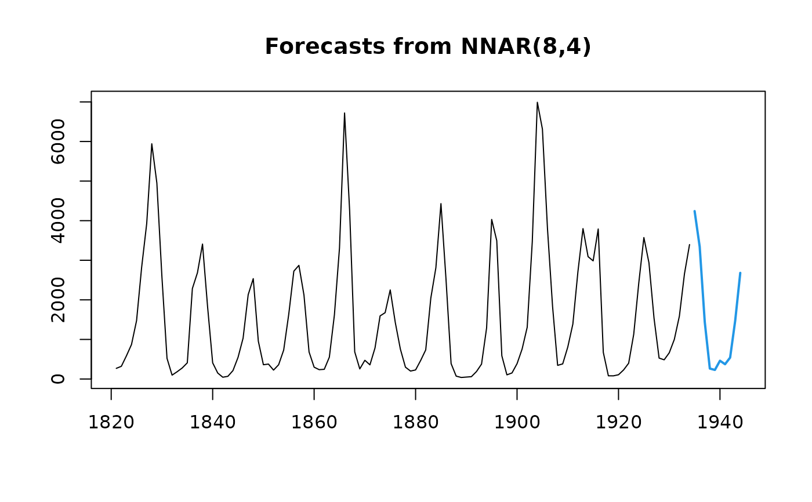
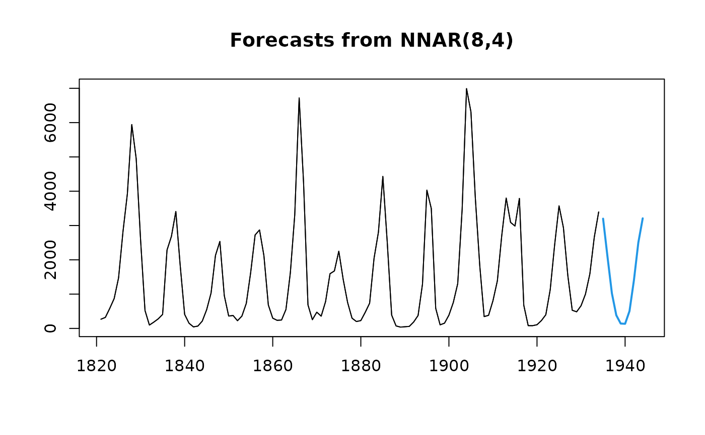
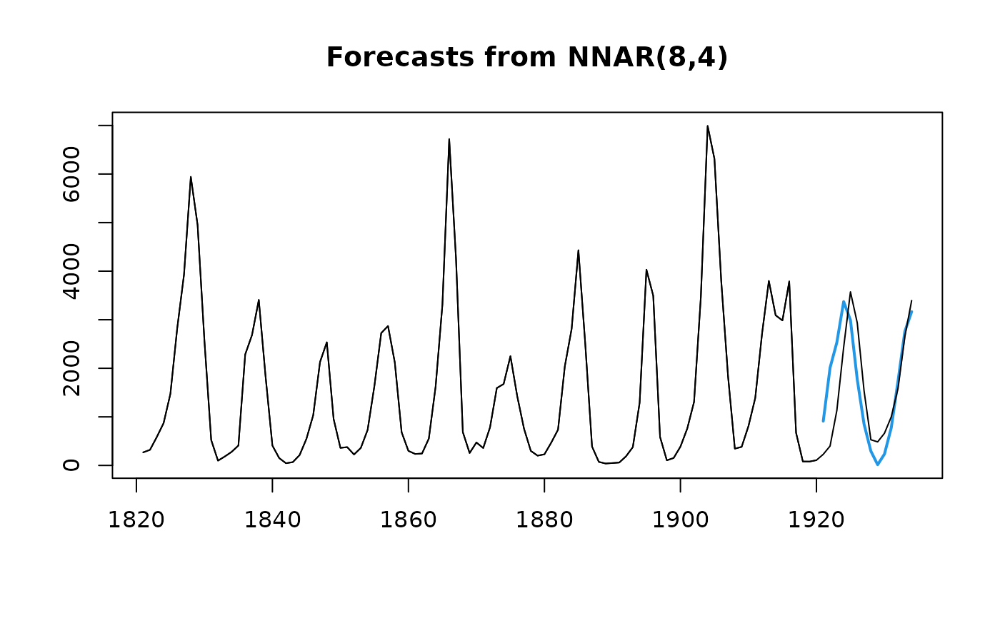

Feed-forward neural networks with a single hidden layer and lagged inputs for forecasting univariate time series.
Usage
nnetar(
y,
p,
P = 1,
size,
repeats = 20,
xreg = NULL,
lambda = NULL,
model = NULL,
subset = NULL,
scale.inputs = TRUE,
x = y,
...
)Arguments
- y
A numeric vector or time series of class
ts.- p
Embedding dimension for non-seasonal time series. Number of non-seasonal lags used as inputs. For non-seasonal time series, the default is the optimal number of lags (according to the AIC) for a linear AR(p) model. For seasonal time series, the same method is used but applied to seasonally adjusted data (from an stl decomposition). If set to zero to indicate that no non-seasonal lags should be included, then P must be at least 1 and a model with only seasonal lags will be fit.
- P
Number of seasonal lags used as inputs.
- size
Number of nodes in the hidden layer. Default is half of the number of input nodes (including external regressors, if given) plus 1.
- repeats
Number of networks to fit with different random starting weights. These are then averaged when producing forecasts.
- xreg
Optionally, a vector or matrix of external regressors, which must have the same number of rows as
y. Must be numeric.- lambda
Box-Cox transformation parameter. If
lambda="auto", then a transformation is automatically selected usingBoxCox.lambda. The transformation is ignored if NULL. Otherwise, data transformed before model is estimated.- model
Output from a previous call to
nnetar. If model is passed, this same model is fitted toywithout re-estimating any parameters.- subset
Optional vector specifying a subset of observations to be used in the fit. Can be an integer index vector or a logical vector the same length as
y. All observations are used by default.- scale.inputs
If TRUE, inputs are scaled by subtracting the column means and dividing by their respective standard deviations. If
lambdais notNULL, scaling is applied after Box-Cox transformation.- x
Deprecated. Included for backwards compatibility.
- ...
Other arguments passed to
nnetfornnetar.
Value
Returns an object of class "nnetar".
The function summary is used to obtain and print a summary of the
results.
The generic accessor functions fitted.values and residuals
extract useful features of the value returned by nnetar.
- model
A list containing information about the fitted model
- method
The name of the forecasting method as a character string
- x
The original time series.
- xreg
The external regressors used in fitting (if given).
- residuals
Residuals from the fitted model. That is x minus fitted values.
- fitted
Fitted values (one-step forecasts)
- ...
Other arguments
Details
A feed-forward neural network is fitted with lagged values of y as
inputs and a single hidden layer with size nodes. The inputs are for
lags 1 to p, and lags m to mP where
m=frequency(y). If xreg is provided, its columns are also
used as inputs. If there are missing values in y or
xreg, the corresponding rows (and any others which depend on them as
lags) are omitted from the fit. A total of repeats networks are
fitted, each with random starting weights. These are then averaged when
computing forecasts. The network is trained for one-step forecasting.
Multi-step forecasts are computed recursively.
For non-seasonal data, the fitted model is denoted as an NNAR(p,k) model, where k is the number of hidden nodes. This is analogous to an AR(p) model but with nonlinear functions. For seasonal data, the fitted model is called an NNAR(p,P,k)[m] model, which is analogous to an ARIMA(p,0,0)(P,0,0)[m] model but with nonlinear functions.
Examples
fit <- nnetar(lynx)
fcast <- forecast(fit)
plot(fcast)

## Arguments can be passed to nnet()
fit <- nnetar(lynx, decay=0.5, maxit=150)
plot(forecast(fit))
lines(lynx)

## Fit model to first 100 years of lynx data
fit <- nnetar(window(lynx,end=1920), decay=0.5, maxit=150)
plot(forecast(fit,h=14))
lines(lynx)

## Apply fitted model to later data, including all optional arguments
fit2 <- nnetar(window(lynx,start=1921), model=fit)